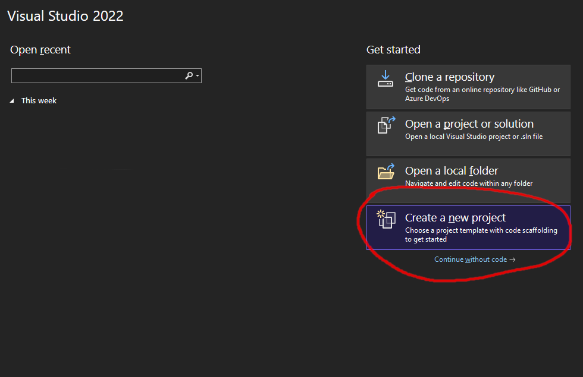

Como instalar C# no Windows (Windows 10)
Para programar em C# você precisa do programa dotnet (http://www.dot.net),
este é o programa que irá transformar o seu código de C# em um programa executável.
Para instalar o 'dotnet'
Para saber se você já tem o programa dotnet:
- abra o terminal no windows (busque o programa ´prompt´ ou 'Command Prompt')
- digite o comando
dotnet --version
Aparecerá a última versão do dotnet disponível.
No meu apareceu isto :
$ dotnet --version
8.0.200
A última versão que eu tenho no meu computador é a 8.0.200.
Qualquer versão depois da (incluindo a) 6.0 servirá para este curso.
Caso você não tenha nenhum instalado você poderá instalar pelo Visual Studio 2022 Community Edition como veremos mais adiante, ou instalar pelo site http://www.dot.net
IDE
O que é uma IDE?
Do inglês integrated development environment ou ambiente de desenvolvimento integrado é uma ferramenta que inclui um poderoso editor de texto para edição de código em um projeto.
Em um projeto o seu código estará em vários arquivos diferentes. Diferente de um simples editor de texto como "notepad++", uma IDE consegue entender o seu projeto como um todo, ao invés de ver cada arquivo de forma separada. Desta forma ela consegue ajudar nas referências que você fizer de um arquivo a outro.
As IDEs são essenciais para fazer qualquer projeto profissional, então é melhor se acostumar com alguma desde cedo.
Qual IDE usar?
Vamos ver aqui como usar duas IDEs: Visual Studio 2022 Community Edition, e Visual Studio Code.
Dois nome muito parecidos né? Vamos ver a diferença entre as duas:
- Visual Studio 2022 Community Edition: é uma IDE desenvolvida pela Microsoft para programar em C# e C++. Esta IDE pode automatizar processor mais complicados como criação e organização de projetos. Esta IDE é mais direcionada para o projeto.
- Visual Studio Code: é uma IDE desenvolvida pela Microsoft para ser altamente customizável, ela não é somente para programar em C#. Por isto você vai precisar configurar bastante ela antes de usar, para que ela se adeque ao seu objetivo. Além disso ela dificilmente vai automatizar a criação e estruturação de projetos. Esta IDE é mais direcionada ao código.
Para iniciantes, recomendo usar o Visual Studio 2022 Community Edition, pois você gastará menos tempo com a parte de configuração do projeto.
Uma outra IDE que pode ser usada é a Rider da JetBrains, mas esta é paga e não será coberta por este tutorial.
Usando Visual Studio 2022 Community Edition
Baixe e rode a última versão do instalador pelo site oficial Visual Studio 2022 Community Edition.

Escolha a instalação do Visual Studio Community 2022

Marque a opção de desenvolvimento de aplicativos para consoles (terminal) e
na outra aba certifique-se de ter uma versão Long Term Supported do .NET, como a 8.0 por exemplo.


Espere a instação ser concluída
Não precisa logar

Crie um novo projeto

Escolha a opçao de Console APP do C#, e não a do VB

Coloque um nome do seu projeto, perceba que o nome da solução e os nomes das pastas ficarão iguais.

Escolha a versão do .NET e crie o projeto

Clique na seta verde para rodar o projeto

Modifique o código para ficar mais parecido com o que a gente verá na aula.

Usando Visual Studio Code
O procedimento deste é mais complicado que o anterior. Para quem está iniciando recomendo que use o Visual Studio 2022 Community Edition
Baixe e instale a última versão pelo site oficial Visual Studio Code.
Crie a pasta que você usará para a sua área de trabalho do 'vscode'.
Vamos seguir o mesmo padrão para criar um projeto no VisualStudio:
Abra esta pasta no terminal e entre com o seguinte comando para criar uma solução chamada MeuProjetoVSC na pasta MeuProjetoVSC
dotnet new sln -n MeuProjetoVSC -o .\MeuProjetoVSC
Entre com o seguinte comando para criar uma aplicação MeuProjetoVSC na pasta MeuProjetoVSC\MeuProjetoVSC. Em -f net8.0 escolha a versão do .net que você quer usar.
dotnet new console -lang c# -n MeuProjetoVSC -o .\MeuProjetoVSC\MeuProjetoVSC -f net8.0
Entre com o seguinte comando para adicionar a aplicação à sua solução.
dotnet sln .\MeuProjetoVSC\MeuProjetoVSC.sln add .\MeuProjetoVSC\MeuProjetoVSC
Entre com o seguinte comando para abrir o vscode com o seu projeto.
code MeuProjetoVSC
Veja seu projeto pronto para rodar no vscode

Clique na seta e em "Run and Debug"

Escolha C#
Escolha C# com o nome do seu projeto
Agora você pode fazer um projeto no VSCode e rodar o seu aplicativo.
.